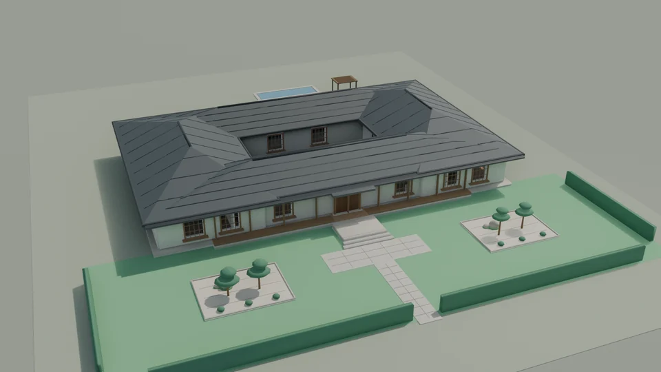
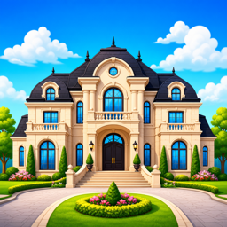
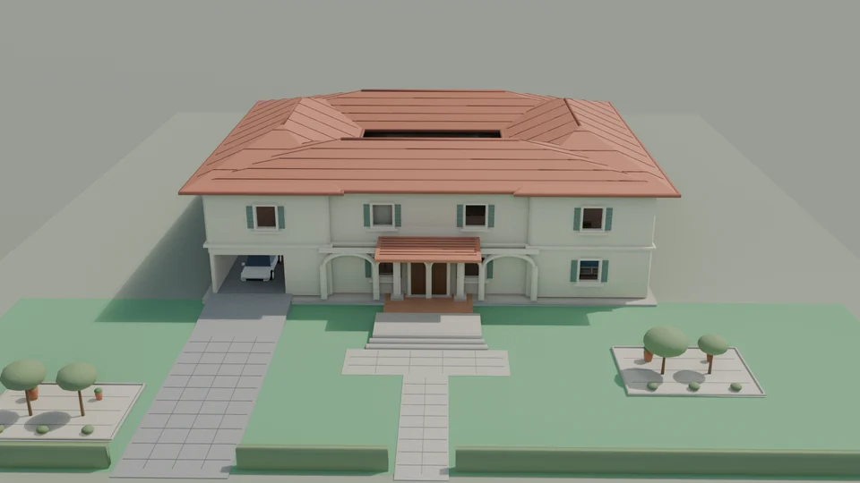
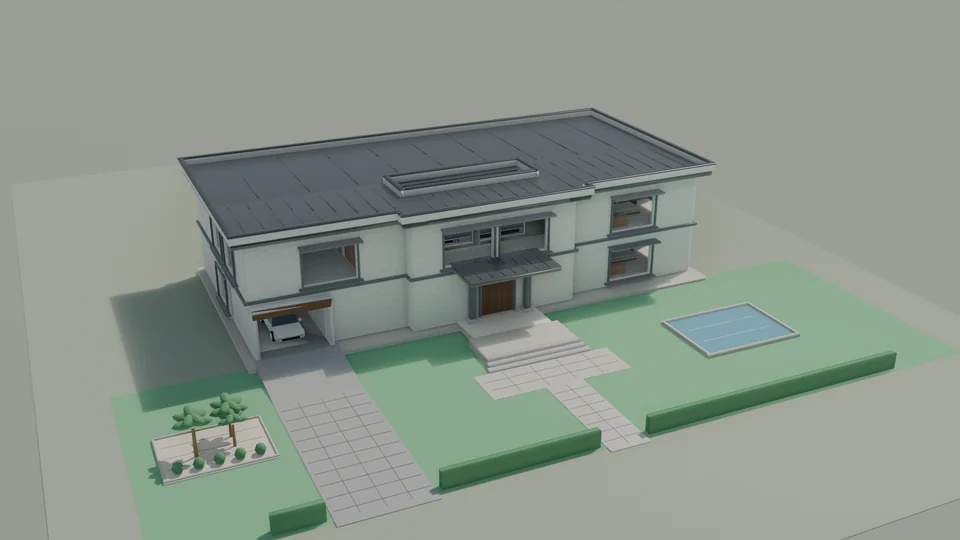
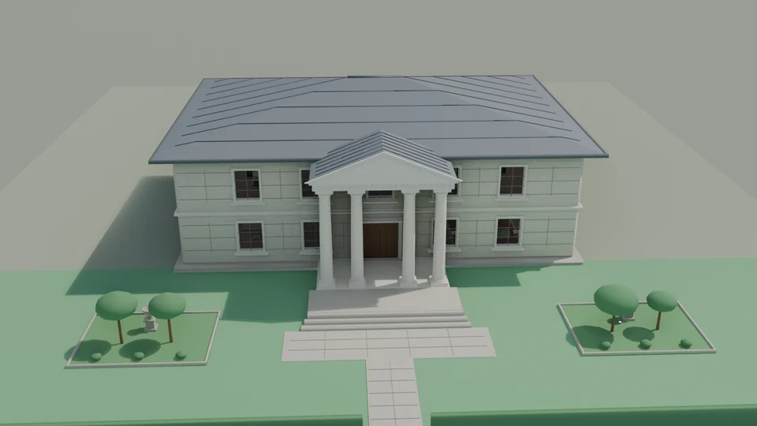
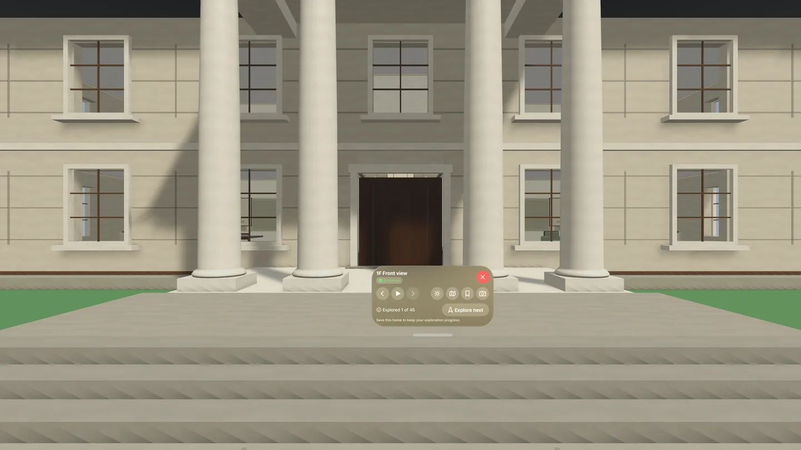
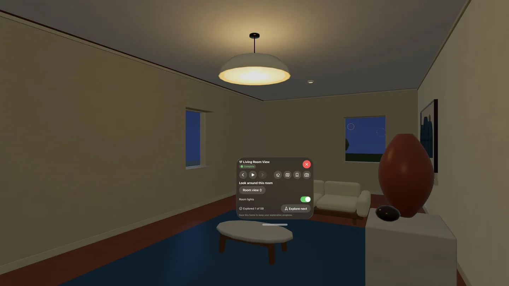

日式庭院
低矮屋簷、木質細節與安靜的庭園。

MANSIONGENERATOR 1.1從日式庭院、地中海庭院、現代度假宅或帕拉第奧別墅開始。設定基地與房間需求，讓建築、家具與庭園一起成形，再用你喜歡的角度欣賞。
付費下載 · iPhone / iPad · Mac · Apple Vision Pro
四套風格從建築延伸到室內與庭園，也能再依自己的需求調整。

低矮屋簷、木質細節與安靜的庭園。

紅瓦屋頂、暖色牆面與中央庭院。

俐落量體、大面窗景與池畔庭園。

對稱立面、柱廊入口與古典比例。
住宅包含家具、廚房、浴室、藝品與庭園；配置車庫時，也會依車位生成私家車。
切換白天、夕陽與夜晚，調整構圖，保存喜歡的設計照片。在 Vision Pro 也能記下喜愛的視角，再次回訪。
重新搭配材質、家具或庭園，保留原本的建築配置；不喜歡這次變化時，可以復原。
iOS、macOS 與 visionOS 的 1.1 版本皆已在 App Store 上架。
快速設定條件、生成方案，並在可操作的 3D 工作區檢視住宅。
用大工作區檢查分層 3D、平面圖與房間，管理保存方案，選擇完整住宅、外觀或可編輯分件輸出。
移動與縮放微縮模型，或以真實尺寸探索住宅。透過面板與地圖巡覽室內外、暫停或接續導覽，並開關房間照明。
1.1 已在 iOS、macOS 與 visionOS 上架。
設定基地尺寸、面積、樓層與廳房衛需求，搭配風格和 seed 生成可重現的設計。生成在裝置本機完成，不需雲端 AI 生成或 AI token。你可以保存方案、比較差異，再局部套用先前的設定。
依用途輸出完整住宅、僅外觀或可編輯分件，包含 OpenUSD、USDZ、SVG 平面圖與診斷資料。這支影片的外觀運鏡、客廳與藝品照片，就是使用 App 的匯出模型，在 Blender 加上燈光與攝影機製作。
適用於概念設計與空間原型。生成成果不是建築、結構、消防、法規或施工圖說；專業用途需由合格專業人員審查。
從一種喜歡的風格開始，生成自己的第一座豪宅。
Start with a Japanese courtyard, Mediterranean courtyard, modern resort, or Palladian villa. Set the site and rooms, generate a furnished home with a garden, then find your favourite view.
Paid download · iPhone / iPad · Mac · Apple Vision Pro
Four coordinated collections carry an architectural style into the rooms and gardens, ready for your own adjustments.
Low eaves, timber details, and a quiet garden.
Terracotta roofs, warm walls, and a central courtyard.
Clean volumes, broad windows, and a poolside garden.
A symmetrical facade, columned entrance, and classical proportions.
Generate rooms with furniture, kitchens, bathrooms, artwork, and gardens, plus private cars in configured garage bays.
Switch between daylight, sunset, and night, frame a view, and save a photograph. On Vision Pro, save favourite viewpoints to return to later.
Change materials, furniture, or gardens while preserving the building layout. Undo lets you return to the previous arrangement.
Version 1.1 is available on the App Store for iOS, macOS, and visionOS.
Set conditions, generate a concept, and inspect it in an interactive 3D workspace.
Inspect layered 3D, plans, and rooms in a larger workspace. Manage saved designs and export complete homes, exteriors, or editable parts.
Move and scale a miniature, or explore the home at full scale. Use the panel and map to visit indoor and outdoor views, pause and resume tours, and switch room lights.
Version 1.1 is available on iOS, macOS, and visionOS.


Set the site dimensions, area, floors, and room needs, then choose a style and seed to generate a repeatable design. Geometry is generated locally on your device, without cloud AI generation or AI tokens. Save designs, compare changes, and reapply selected settings from earlier versions.
Export complete homes, exteriors, or editable parts as OpenUSD and USDZ, with SVG plans and diagnostics. The exterior animation and interior photographs above use actual app exports, with lighting and cameras set in Blender.
For concept design and spatial prototyping. Generated results are not architectural, structural, fire-safety, code-compliance, or construction documents. Professional use requires qualified review.
Choose a style and generate your first mansion.